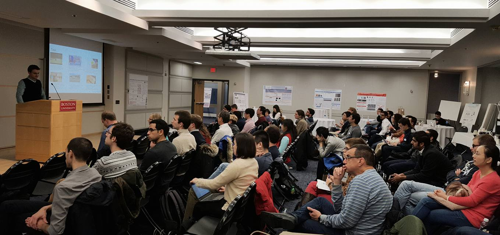

New England Computer Vision Workshop, 2016

The 2015 New England Computer Vision Workshop was held at UMass Amherst.
Welcome to the 2016 New England Computer Vision Workshop, to be held at Boston University. This event brings together researchers in computer vision and related areas for an informal exchange of ideas through a full day of presentations and posters.
We have around 100 people attending from various universities and industry research labs in the New England area.
Participation is free for universities (or research institutions) only; a limited number of industry spots will be made available
through sponsorship (please contact us via email).
Please register here by Friday, Nov 4th if you have not already done so. (Registration is closed!)
A detailed schedule with a list of talks and posters is now available (updated 11/21).
| 09:30 - 10:00 | Breakfast with coffee |
| 10:00 - 10:10 | Welcome |
| 10:10 - 12:00 | Morning talks |
| 12:00 - 01:00 | Lunch |
| 01:00 - 03:00 | Poster session (with coffee) |
| 03:00 - 05:00 | Afternoon talks |
The Colloquium Room is located in the Photonics Center on the 9th floor of 8 St. Mary's St. To get to the building, follow the directions on this page: http://www.bu.edu/maps/?id=320
BU is an urban campus, and we highly encourage use of public transportation to get here. If you need parking, please let us know in the registration form.
If you plan to come a day ahead, or want to stay an extra day, there are many lodging options in the Boston area.
There are parking lots available at 665 Commonwealth Avenue and 549 Commonwealth Avenue. These are pay-on-entry lots, and more information including maps and prices can be found at Boston Univeristy Parking.

The workshop is being organized by Kate Saenko, Margrit Betke, Stan Sclaroff and Samson Timoner.